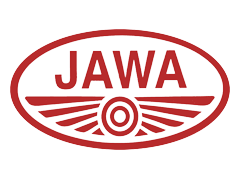

JAWA 42
JAWA 42
JAWA (Czech pronunciation: [java]) is a motorcycle and moped manufacturer founded in Prague, Czechoslovakia in 1929 by František Janeček, who bought the motorcycle division of Wanderer. The name JAWA was established by concatenating the first letters of Janeček and Wanderer. In the past, especially in the 1950s, JAWA was one of the top motorcycle manufacturers and exported its 350 model into over 120 countries. The best known model was the 350 Pérák and in the 1970s the 350 Californian. It appeared in typical black and red coloring from California to New Zealand. After 1990 a significant loss of production occurred. A successor company was formed in 1997 in Týnec nad Sázavou, continuing the name as JAWA Moto.
JAWA motorcycles got a resurrection in India in December 2018, by Classic Legends, which is owned by Mahindra, through a licensing deal with the JAWA Moto.
|  | |
| Founded | 1929 |
|---|---|
| Founder | František Janeček (1878–1941) |
| Headquarters | Prague,Czech Republic |
| Products | Motorcycles,mopeds |
| Total assets | 287,928,000 Czech koruna (2017) |
| Number of employees | 100 (as of 2017) |
| Parent | Jihostroj |
Ideal Jawa India Ltd based in Mysore was an Indian motorcycle company, which produced licensed Jawa motorcycles beginning in 1960 under the brand name Jawa and from 1973 as Yezdi. The company stopped production in 1996. Jawa motorcycles have a cult following to this day. Earlier models manufactured in Czechoslovakia bore the CZ Jawa emblem on the side of the fuel tank. The locally manufactured models always had O within the Jawa emblem. The Jawa 250 Type 353/04 designated as 'A' Type, Yezdi 250 'B' Type, Jawa 350 type 634 Twin and Yezdi 250 Monarch models are currently ridden in the country. Jawa and Yezdi bikes, especially ones with fuel tank paddings and ignition systems on the fuel tank, are collectors items.
In October 2016, Mahindra & Mahindra, through its subsidiary Classic Legends Private Limited (CLPL), signed a licensing deal to launch motorbikes under the JAWA brand name in India and other East Asian countries.[9] On November 15, 2018, the Classic Legends launched three motorcycles in India: Jawa 300, Jawa Forty-Two, and Jawa Pérák. In 2021, a new model Jawa 42 was introduced, it is the Forty-Two with modified appearance and equipment. They are manufactured in Pithampur.
The Jawa 300 is inspired by the company's popular classic Jawa 250, while the Jawa 42 (Forty-Two) is a more modern and urban offering. The Jawa Pérák is a completely different model, a custom bobber motorcycle. Jawa 300 and Jawa 42 share the same technical specifications - 293-cc (20,4 kW), front disc, rear drum, single-channel ABS, fuel injection system, liquid-cooled engine with radiator, and kerb weight of 170 kg. In terms of appearance, classic Jawa has more chrome, while the Jawa 42 has a modern feel to attract younger riders. It is a competitor to the Royal Enfield Classic 350 in Indian market.[11] Jawa Pérák has a 334-cc (22,3 kW) engine.
Historically, JAWA had been active in racing, and by far the most active Eastern European manufacturer in motor sports. In track racing, JAWA sustained a presence in the world championship until the mid-'60s with respectable performances considering their limited budget. In motocross, the firm built an impressive record before its four-stroke engines became superseded by two-stroke engines. In speedway racing, dirt-track racing, and ice racing where four-stroke engines were still at an advantage, the firm remained a dominant force. The separate factory where these competition motorcycles were built became a separate company following the privatizations of the 1990s with the fall of communism.
Speedway World Champions who have ridden successfully on Jawa bikes include Ivan Mauger, Barry Briggs, Ove Fundin, Ole Olsen, Michael Lee, Tony Rickardsson, and Kelvin Tatum.
Most sold is the iconic 350-cc two-stroke twin, which is almost mechanically unchanged since the 1970s, but reliable. Currently they are sold mainly in Latin America.
In 1934, Jawa introduced its first car, the Jawa 700, based on the DKW F2.[7] Overall, 1,002 vehicles were produced. The sports car special Jawa 750 was built only in six pieces for the 1000-mile Czechoslovakian race in 1933–35. It is a legend in the history of domestic motor sports. In 1937, the modified Jawa 600 Minor was introduced, which replaced JAWA 700. Production continued in limited numbers during WWII, and some were assembled in the postwar period.[8] Over 14,000 vehicles were produced and more than half were exported abroad. The successor was the Aero Minor; it was, however, manufactured by Aero and not by Jawa, from 1946 to 1952.
Under the name Jawa a variety of mopeds with two-stroke engines were sold in foreign markets. In Czechoslovakia (and foreign markets after 1989), these mopeds were known as the Babetta. The mopeds were produced since 1970 in Slovakian Považská Bystrica and Kolárovo. It was the first company to include electronic ignition on mopeds. In the first half of the 1990s, sales and exports gradually declined, and the production of Babettas was discontinued in 1999.